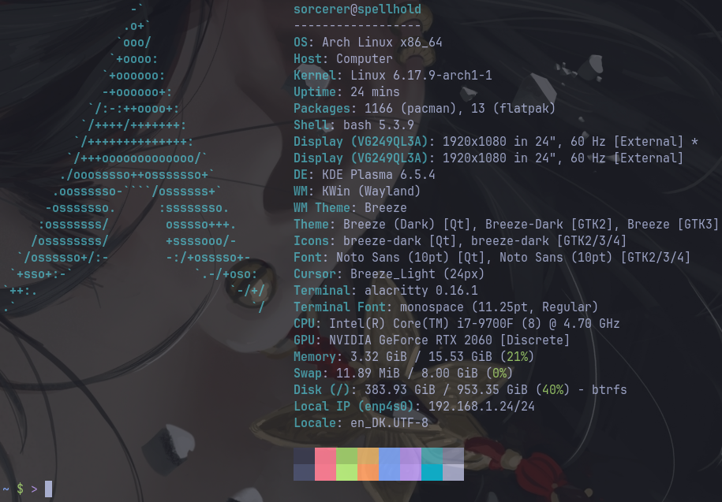
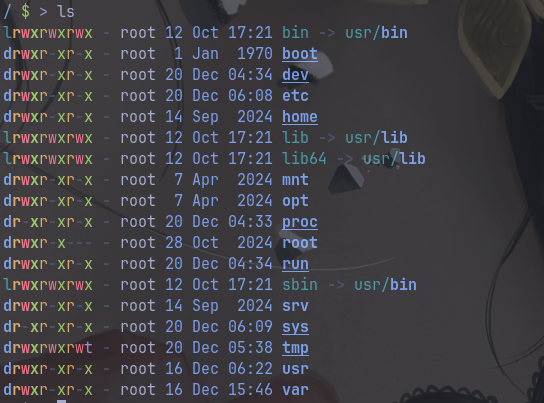
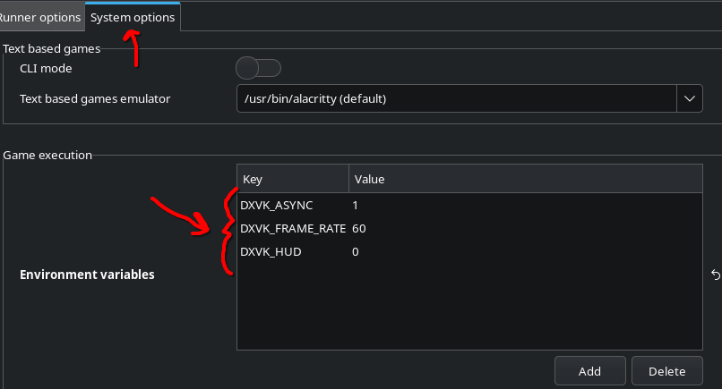

Overblik over Linux for windowsudvandrere
Software
Der er flere måder at installere programmer på. Den mest robuste og i de fleste tilfælde foretrukne metode er at bruge "official repositories", altså i Manjaros tilfælde de programmer, der ligger på Manjaros officielle servere og mirrors. I nogle tilfælde er du dog nødt til eller bedre stillet ved at bruge alternative metoder.
Officielle pakker
Pacman er Arch Linux's package manager. Det er det program, der holder styr på operativsystemet og det meste af den software, der er installeret. Programmer og libraries (programudvidelser) kaldes i styresystemssammenhænge for pakker. Package manageren holder styr på, hvilke ting der er afhængige af hvilke andre ting, klarer versionsstyring på tværs af de enkelte pakker, opdaterer systemkonfiguration på baggrund af, hvad der er og bliver installeret, og så videre. Pacman står altså for at koordinere installation og vedligeholdelse af software og holde styr på konfigurationen af software i forhold til det underliggende system.
Systemopdateringer kan automatiseres og sættes i skema, så du fx får nye opdateringer hver uge eller hver måned. Manjaros package manager hedder Pamac og er en grafisk frontend for Pacman. Pamac understøtter dog også andre kilder til software end de officielle repoer, så du kan holde styr på det hele ét sted.

Flatpak
Flatpak er gigapopulært som alternativ til at installere software via styresystemets package manager. Det skyldes flere ting: For det første er Flatpaks selvstændige og indeholder alle de filer og udvidelser, der skal til for at køre dem. De kan derfor køre på et hvilket som helst linuxsystem, uanset hvad der er installeret på systemet. For det andet er Flatpaks isolerede fra resten af systemet: De bor i et afgrænset område i filsystemet og kan i udgangspunktet ikke tilgå resten af systemet. I praksis giver du dog ofte Flatpaks lov til fx at skrive til og læse fra /home, så du kan gemme filer og den slags.
Flatpak er integreret i Pamac og kan installeres derfra. Du kan dog også gøre det via kommandolinjen, hvor du har flere muligheder, men det er ikke påkrævet til de mest basale handlinger. Flatpaks bor på Flathub, hvor du kan kigge rundt og læse om de forskellige programmer. De kalder sig selv en "App Store" til Linux, og det er en god analogi. Personligt bruger jeg til daglig kun Flatpaks til Spotify og Discord, men hvis jeg vil teste et nyt program eller ved, jeg kun skal bruge det ganske kortvarigt, tjekker jeg altid, om der er en Flatpak, for så kan jeg let fjerne programmet igen uden at skulle tænke over, om jeg har fået det hele med.
AppImage
Lissom Flatpak er AppImage en selvstændig fil, der kan køre uafhængigt af det specifikke styresystem. Det er på mange måder en endnu lettere metode end Flatpak, da AppImages bare er enkelt filer, som du dobbeltklikker på for at køre og bare sletter for at fjerne. Det er ikke så mange ting, der distribueres via AppImage.
Eksekverbare filer uden videre
Installerede programmer kan selvfølgelig bare køres uden videre, og hvis ellers du har de systembiblioteker og programmer, et downloadet program er afhængigt af, kan du også bare pakke programmappen ud og køre den binære programfil uden videre. Til grundlæggende software uden for mange specielle krav til systemsoftware er det en let og ligetil metode. Bemærk i øvrigt, at filendelser ikke bruges til normale programfiler. Du kan dog også støde på programmer, som er indlejret i shell scripts, og de vil som regel have filendelsen .sh. For at køre shell scripts er der nogle særlige tilladelser og måder at skrive kommandoer på, du skal kende, men det er ikke så vigtigt lige nu og her.
Wine
Wine er det traditionelle program til at køre windowsprogrammer på Linux. Navnet er et såkaldt rekursivt akronym og står for "Wine Is Not an Emulator"; ret fjollet, men historisk set er det en udbredt måde at navngive ting på. Programmet er et kompatibilitetslag, som er en slags kortlægning af funktionalitet de to styresystemer imellem, så kommandoer i Windows/DirectX bliver omdirigeret ad de tilsvarende kommandoveje i Linux/Vulkan. Det er en vigtig forskel fra emulatorer, da der med et kompatibilitetslag ikke er særligt meget ekstra arbejde for systemet at udføre.
I forbindelse med Wine (og Proton; mere herunder) støder du på begrebet prefix. Det er i praksis en mappe på harddisken, hvor der ligger et helt funktionelt C-drev som på en windowscomputer. De programmer, du kører, vil så køre inde i det prefix og betragte mappens indhold som C-drevet på den virtuelle windowscomputer. Som regel har du et hovedprefix i systemet, hvor de fleste windowsprogrammer kører, men du har også mulighed for at lave nye prefixes, hvis du vil holde tingene adskilt. Det kan være en god idé, fordi forskellige prefixes kan have forskellige krav til, hvilke systemudvidelser der er installeret og andre ting i opsætningen. Alle de spil, du installerer, bliver i udgangspunktet installeret i separate prefixes.
Spil
Der er flere måder at køre windowsspil under Linux. Steam er selvfølgelig den største og letteste måde, og til andre launchers og separate spil er der programmer som Lutris, Heroic Games Launcher og Bottles. De tre er grundlæggende set bare grafiske frontends for Wine, men med hver deres tilgang og en masse andre funktioner. Jeg bruger Steam og Lutris, men Heroic Games Launcher er også ret populær til spil, og Bottles er en god almennyttig frontend for Wine.
Proton
Proton er Valves videreudvikling af Wine, som er specifikt målrettet steamspil. Det er Proton, der er skyld i, at du som computerspilsfan kan bruge Linux. Når du installerer Steam på Linux, er den nyeste stabile udgave af Proton med, og du har endda mulighed for at køre den allernyeste "ustabile" udgave ved at skifte til Proton Experimental i opsætningen; det kan få nogle spil til at virke, som ikke virker med den stabile udgave. Proton bruger Vulkan til grafikhåndtering i stedet for DirectX og fungerer dermed som bro mellem de to.
I stedet for at bruge Valves officielle Proton kan du vælge at bruge GE-Proton. "GE" står for GloriousEggroll, som er navnet på en virkelig dygtig programmør, der har presset konvolutten endnu mere end Valve. Det er bleeding edge, men de folk, der vedligeholder det, er som regel hurtigere ude med fixes og opdateringer end Valve, og det kan godt betale sig at bruge GE-Proton. Du installerer det ved at pakke det ud inde i steamfolderen det rigtige sted, og derefter kan du vælge at bruge det som kompatibilitetslag i Steams standardopsætning (se afsnittet om Steam herunder). Ulempen ved at bruge GE-udgaven er, at du manuelt skal opdatere til den nyeste version, men der er nogle værktøjer, der gør det relativt ligetil, bl.a. en Flatpak, der hedder ProtonUp-Qt; med den kan du holde styr på Proton med en grafisk brugerflade.
Slutteligt kan det bemærkes, at nogle spil kører hurtigere og bedre via Proton end de gør i Windows, fordi kompatibilitetslaget ikke tilfører systemet særligt meget mere arbejde, og det lille ekstra arbejde mere end opvejes af Linux's hastighed og effektivitet i forhold til Windows.
Steam
Steam er i sagens natur meget godt understøttet i Linux efterhånden. Du kan installere det som Flatpak, og det gjorde jeg selv engang, men det gav mig en række problemer at have Steam isoleret fra resten af systemet, og derfor installerer vi det gennem Manjaros officiel repo i stedet. Når det er installeret, fungerer det fuldstændig som på Windows. Stort set alle spil kører uden videre i Proton; eneste undtagelser er de spil, der bruger kernel-level anticheats. Det gør fx Destiny 2 og alle Riot-spil. Du vælger, hvilken udgave af Proton der skal bruges, i Steam Settings på Compatibility-fanen.

Nogle gange eksisterer der en reel linuxversion af et spil, og den vil blive installeret som standard. Paradoksalt nok kører linuxudgaverne ofte dårligere end windowsudgaverne via Proton, og nogle gange virker de slet ikke! I de tilfælde kan du tvinge Steam til at downloade windowsudgaven ved at gå ind i Properties for spillet, slå "Force the use of a specific Steam Play compatibility tool" til på Compatibility-fanen og vælge Proton fra dropdownmenuen.

Lutris
Steam er til steamspil, og Lutris er til "alt andet". Lutris kan integreres med alle spiludbydere som GOG, Epic, EA, og sågar også Steam, så du kan tilgå de spil, du ejer, direkte gennem Lutris og installere dem uden videre. Du kan også installere emulatorer til fx Amiga eller Playstation og administrere dem i Lutris. Lutris giver derudover mulighed for at håndtere Wine-prefixes og køre exe-filer inde i prefixes for fx at installere DLC og den slags. Det er lidt mindre ligetil end Steam og giver nogle gange lidt hovedpine, men overordnet set fungerer det godt. Nogle gange skal du dog dreje lidt på et par knapper og slå lidt op på nettet for at få det til at virke.
Lutris ser sådan her ud:

Hvis du trykker på det lille tandhjul ved siden af Wine under Runners i menuen til venstre, kan du vælge, hvilken udgave af Proton Lutris skal bruge. Her er det så smart, at et af valgene er "GE-Proton (Latest)", og hvis du vælger det, holder Lutris automatisk Proton opdateret med den nyeste GE-version.

Systemet
Kommandolinjen
Nu om dage behøver du ikke bruge kommandolinjen til særligt meget, men det er et område, hvor Linux står enormt stærkt, og der er mange entusiaster, der sværger til at gøre så meget som muligt via tekst. Der er en masse små kommandoer, som rent faktisk er nyttige i det daglige, såsom ls, der viser indholdet af den nuværende mappe, cat, der viser indholdet af en fil, grep, der filtrerer output og kun viser ting, der matcher et søgekriterie. Du kan sætte kommandoer i serie, så outputtet fra en kommando videresendes til den næste kommando; det lyder abstrakt, men det er rigtigt nyttigt, og det gøres ved at sætte en lodret streg mellem kommandoerne. Tag fx den her linje:
$ > cat tekstfil.txt | grep -i banjo
Den betyder "output alt indholdet af tekstfil.txt, men i stedet for at sende det til skærmen, så find alle forekomster af ordet "banjo", og vis mig bare de linjer, hvor det ord forekommer". Ved at skrive -i i grep-kommandoen gøres søgningen case-insensitive, så den også finder Banjo og BANJO.
Så længe der er internet, er det ikke rigtigt nødvendigt at kunne huske noget som helst om noget som helst, der har med kommandolinjen at gøre. Det er teoretisk set muligt at støde på kommandoer på nettet, der sletter hele mapper eller gør et eller andet andet ondsindet, men det er nok en teoretisk risiko mere end noget andet. Jeg tror, du skal grave dybt i søgeresultaterne for at være i fare, men en kommando som rm -rf / støder du nogle gange på som en joke; kommandoen fjerner (rm = remove) alt (/ = systemets rod) inklusive undermapper (-r = recursive) uden at spørge om yderligere (-f = force), og det er derfor noget nær det mest destruktive, du kan skrive i terminalen. Her er det dog værd at bemærke, at du er sikret i kraft af at være logget på som normal bruger; du ville ikke have tiladelse på din egen konto til at slette systemmapperne. Alle dine egne mapper og filer ryger dog uden videre.

Filsystemet
Linux er lavet ud fra en filosofi om, at "alt er en fil". I praksis betyder det bare, at der ikke er en masse abstrakte registre og navne, men at alt er repræsenteret i filsystemet på en eller anden måde. Dit netværkskort er en fil (/sys/class/net/eth0), kanal 14 på dit lydkort er en fil (/sys/class/sound/card0/pcm0p/sub0/channel14), og der er endda en RNG-fil, der bare producerer en uendelig strøm af vilkårlig data, hvis du læser fra den (/dev/urandom). Det giver os mulighed for at interagere med fysiske komponenter via filsystemet og fx spille en lyd ved at sende data direkte til højttaleren via kommandolinjen. Det gør du i sagens natur ikke hver dag, men det er alligevel en ret imponerende opsætning.
Et linuxsystem har en grundlæggende mappestruktur, der går igen på alle systemer.

Det er ikke nødvendigt at huske andet, end at brugerens filer ligger i /home/brugernavn, og at en genvej til den mappe er ~. Så en sti som ~/Downloads betyder /home/brugernavn/Downloads. Skjulte filer og mapper starter med et punktum. Konfigurationsfiler til brugerens programmer ligger fx som standard i ~/.config. Slutteligt kan det nævnes, at kommandoer konventionelt set skrives med $ først, hvis du kan køre dem som normal bruger, og med # først, hvis de kræver superbrugerrettigheder. Tegnene modsvarer, hvad der vises i terminalen; når du er logget ind som dig selv, står der $ i kommandoprompten; se fx screenshotsene herover.
$ > denne kommando kan køres som normal bruger
# > denne kommando kræver superbrugerrettigheder
Ekspertviden: I screenshottet herover med oversigten over filsystemet står der ting som drwxrwxrwx foran hver mappe og fil. Det er en filtypeangivelse efterfulgt af de rettigheder, der er indlejret i filen. Det første bogstav er filtypen, hvor d er directory, l er link, og . er en normal fil. De næste ni bogstaver er rettigheder for filens ejer, ejerens gruppe og alle andre. Hver af de tre har tre potentielle rettigheder: r = read, w = write, x = execute. Så hvis en fil har rettighederne rwxr-xr-x, betyder det, at filens ejer har alle rettigheder, men andre brugere kan kun se den og eksekvere den (dvs. køre den, hvis det er et program, eller gå ind i den, hvis det er en mappe). Det meste af tiden er det ikke vigtigt, men det er værd at vide, da det nogle gange er her, der opstår problemer, hvis en fil har de forkerte rettigheder. Heldigvis kan du let ændre rettigheder med kommandoen chmod.
Begreber
Du kommer til at støde på begreber, som det er rart at kende betydningen af. Her er nogle af dem.
kernel
Kernen i Linux hedder the Linux kernel, linuxkernen. Tænk på den som linket mellem den software, du har installeret, og hardwaren på computeren. Den holder styr på processer, hukommelse, CPU, filer, netværk og så videre. Det er stadig Linus Torvalds, der står i spidsen for udviklingen af kernen, men der er tusindvis af mennesker involveret. Linuxkernen er modulær, så selvom det er en enorm ting alt i alt, bruges kun de ting, der er relevante for din computer.
Der er en række centrale konfigurationsfiler, der altid er sammensat til din helt præcise systemkonfiguration. Derfor vil du også opleve, at nogle af disse konfigurationsfiler vil blive genskabt fra bunden, når du kører en systemopdatering. Det er med til at sikre, at systemet er helt tight og optimeret.
terminal/console/cli
Der er forskellige navne for kommandolinjen i Linux, men i praksis peger de alle sammen bare på det tekstbaserede interface. Også her er der flere muligheder, både i forhold til selve terminalemulatorprogrammet (det program, der viser input og output på skærmen) og din shell, som er det program, der fortolker de ting, du skriver, og sender dem videre til andre programmer. Some standard bruges den shell, der hedder Bash, og de fleste tekstbaserede løsninger og scripts, du finder på nettet, er skrevet i Bash.
dependency
Når du installerer software, kan det enkelte program afhænge af et andet program eller en programudvidelse (et library). Hvis program A kun virker, hvis program B er installeret, så siger man, at program B er en dependency for program A. I dagligdagen vil du støde på det, når du installerer og afinstallerer software. Du vælger måske at installere ét program, men Pacman/Pamac spørger, om du vil installere 20 programmer. Det er, fordi de 19 af programmerne er dependencies for det program, du prøver at installere. Det er helt normalt. Når du afinstallerer software, kan du vælge at fjerne dependencies også; Pacman/Pamac vil sørge for kun at fjerne de dependencies, der ikke er brugt af andet software, så det er i udgangspunktet en sikker handling.
root
Når du bruger Linux, er du logget på som normal bruger. Der er også noget, der hedder en superbruger. Superbrugerkontoen hedder traditionelt set root, og du snakker om root access enten i betydningen "logget ind som root" eller i betydningen "med tilladelse til alle handlinger". På mange moderne desktopinstallationer af Linux er root deaktiveret, så du ikke skifter konto, men i stedet er afhængig af midlertidigt at få superbrugerrettigheder, mens du udfører handlinger, der kræver root access.
sudo
For at få superbrugerrettigheder midlertidigt er der en kommando, der hedder sudo, som står for "superuser do", altså "foretag den her handling som superbruger". I praksis vil det at få superbrugerrettigheder oftest tage form som en popup på desktoppen, hvor du bare skal skrive dit password, men hvis du skulle have brug for at køre en kommando som superbruger i terminalen, skriver du sudo foran kommandoen. For at køre Pacman, skal du fx skrive sudo pacman.
git
Git er et versionsstyringssystem. På det offentlige internet bruger langt de fleste mennesker Github, som ejes af Microsoft, men der er også alternativer som Codeberg, og nogle større firmaer har sågar et internt gitsystem. Selve git er udviklet af Linus Torvalds, manden bag Linux. I dagligdagen vil du opleve, at en masse open source-programmer og deres dokumentation ligger på Github, og når du bruger Pacman, kan du støde på pakker, der hedder pakkenavn-git; det betyder som regel, at den pakke vil blive installeret, ved at den nyeste version bliver hentet direkte fra Github og compilet på din computer. Ikke så vigtigt; bare noget at være beredt på, hvis en installation pludselig begynder at compile kildekode.
desktop environment (DE)
Den grafiske brugerflade af styresystemet. Du bruger KDE Plasma, og det er sammen med Gnome de to helt store. Der er dog en række alternativer til alle mulige snævre behov, som Cinnamon, Xfce, COSMIC med flere.
KDE er robust, intuitivt og brugervenligt. Dit DE har ingen indflydelse på, hvilke programmer du kan køre, men styrer systemets udseende og opførsel og installeres med en række grundlæggende programmer som teksteditorer, lommeregnere, systemkonfigurationsværktøjer, filhåndteringsprogrammer og så videre. Hvis et program er udviklet af/til KDE, starter navnet som regel med k: Kate, Krita, KWin, Konsole, KCalc og så videre.
window manager (WM) og compositor
Desktop environments er afhængige af window managers og compositors for at køre den grafiske brugerflade, og det er naturligvis ikke supervigtigt at forholde sig til. Det er dog rart at kende til to compositing window managers, der hedder X11 og Wayland. Stort set alle grafiske linuxinstallationer bruger enten den ene eller den anden. X11 er den gamle spiller på banen, men i mange år har der været et projekt i gang for at lave et mere moderne og sikkert alternativ: Wayland. Wayland er kommet så langt, at det nu er standard i flere af de store distributioner. Der har historisk set været knas mellem nVidia og Wayland, men de problemer blev mere eller mindre løst sidste år, så vi bruger Wayland. Det er godt at vide, hvilken af de to du bruger, når du skal løse problemer, for nogle gange er løsningerne forskellige, afhængigt af om du bruger X11 eller Wayland.
Det er i øvrigt muligt at køre en grafisk brugerflade kun med en window manager, og det gør mange af de mere nørdede tekstfanatikere. De er særligt glade for tiling window managers, der automatisk tilpasser vinduers størrelse til at fylde hele skærmen. Et kaninhul til en regnvejrsdag.

Nyttige kommandoer og fif
Gamemode i Steam
Gamemode er et program, der optimerer systemet til spil midlertidigt, mens spillet rent faktisk kører. Det installerer vi også. For at køre spil med "gamemode" og maks. 60 frames i sekundet, plus et par ekstra optimeringer, tilføjes følgende til launch options i Steam for det enkelte spil: gamemoderun DXVK_FRAME_RATE=60 DXVK_ASYNC=1 __GL_SHADER_DISK_CACHE=1 __GL_SHADER_DISK_CACHE_SKIP_CLEANUP=1 STAGING_SHARED_MEMORY=1 %command%

Problemer med "Downloading ..." hele tiden i Steam
Steam kan downloade shaders (oplysninger om, hvordan grafikken behandles) på forhånd, så spil kører mere flydende og skal bruge mindre tid på at compile shaders selv. Det er smart i teorien, men i praksis kan det give nogle problemer, og de her shader cache-filer kan ende med at fylde sindssygt meget. Jeg har endda været ude for, at Steam gik i selvsving og stort set downloadede shadere til Warframe hele tiden, fordi der var noget galt med cachens opsætning i forhold til Warframes opsætning, så cachen hele tiden blev ugyldiggjort og gendannet. Jeg har derfor slået shader pre-caching helt fra for alle spil, og det fungerer fint. Hvis der af den ene eller anden årsag skulle være problemer med processen, kan du slå pre-caching fra i Steam Settings på Compatibility-fanen.

Miljøvariabler i Lutris
Som standard vises der et overlay, mens du kører spil via Proton i Lutris, der viser en besked, når systemet compiler shaders. Det kan du dog slå fra med en miljøvariabel. Her er de tre miljøvariabler, jeg anbefaler at indtaste i Lutris som standard for alle spil (se afsnittet om Lutris længere oppe). Tryk på Add-knappen, og indtast navnene og værdierne manuelt ved at trykke på de tomme felter i den nye linje, der bliver indsat i listen.

Manuel systemopdatering
For at opdatere systemet med de nyeste pakker via kommandolinjen:
$ > sudo pacman -Syu
Support
Hvis du har brug for hjælp og vil prøve på egen hånd, er der rigtigt mange ressourcer på nettet skrevet og vedligeholdt af brugere med masser af info og guides. Her er et par måder, du kan få hjælp på:
Spørg mig
Trin ét i problemløsningsprocessen er naturligvis bare at spørge mig, hvis jeg er hjemme, og du i øvrigt ikke føler stærkt for at klare ærterne på egen hånd. Jeg har måske løst præcis samme problem før, og uanset hvad kan vi lettere finde løsningen sammen.
Almene søgemaskiner
Det er som regel et godt første skridt at google sit problem, så der kommer links til forskellige forummer og wikier med de mest relevante resultater øverst. Du kan tilføje "manjaro" eller "arch" til søgningen for at få løsninger, der kan anvendes direkte i dit eget system. Vær dog opmærksom på, at der pga. den minimale opsætning af systemet og det brede udvalg af software kan være løsninger, der involverer programmer, du ikke har installeret. I sådan nogle tilfælde kan du overveje, om du vil installere de programmer eller kigge efter en anden løsning.
Manjaro har deres egen wiki med guides til at gøre forskellige almindelige ting. Det er brugervenligt og let at overskue, og det modsvarer fuldstændig det, du ser i dit eget system. Hvis du skal grave dybere i et eller andet, er det dog en god ide at besøge Arch-wikien i stedet.
Arch Linux er kendt for at have den bedste wiki i linuxverdenen, og den er opdateret og ufatteligt omfattende. Den er ret tilgængelig, men den har samtidig så grundig og dybdegående info, at det kan være lidt overvældende. Der er svar på stort set alt i verden, der har med Linux at gøre.